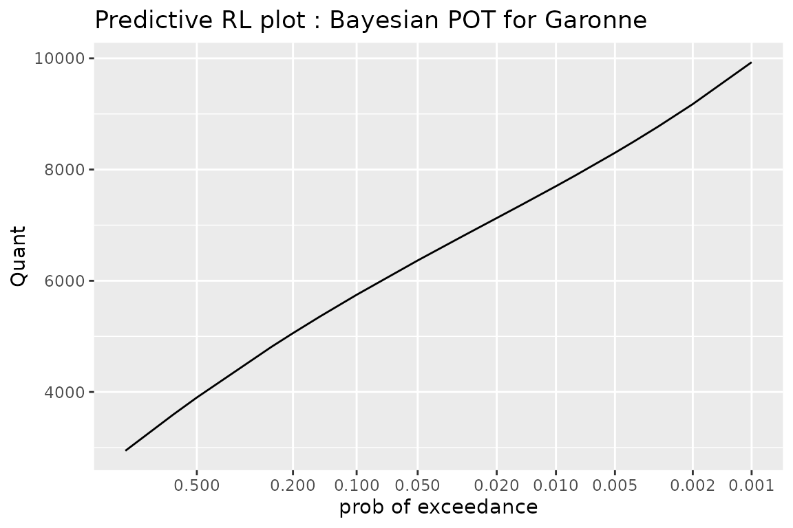

The bever Package User Guide
Yves Deville
2023-12-28
User.RmdThis document was created with bever 0.1.4 and potomax 0.2.4. As is the case for the whole package, this vignette is to be considered as a DRAFT version that still needs, checking, renaming, …
Introduction
Goals
The package bever is devoted to Extreme-Value models considered from the Bayesian perspective. It depends on the potomax package which consider the same models from a frequentist perspective with emphasis on the Maximum-Likelihood (ML) approach. So the two perspectives can be compared by using the same data and by producing similar results such as the classical Return-Level plots. So bever aims at producing these graphics and diagnostics. Although the package contains some functions dedicated to the estimation and inference of these Bayesian models, the results can also be produced by using Markov Chain Monte-Carlo with different R packages or even by using a sampling engine such as JAGS or stan. bever will then essentially retain the MCMC iterates.
Extreme-Value Models
The package focuses on four types of Extreme-Value models, conveniently represented by an acronym (or abbreviated names) as follows.
"GEV"GEV model or Block Maxima. The parameters are: \(\mu^\star\) (location), \(\sigma^\star\) (scale) and \(\xi^\star\) (shape). The blocks are assumed to have a constant known duration."OS"models for \(r\)-largest order statistics in blocks. The parameters are the GEV parameters \(\mu^\star\), \(\sigma^\star\), \(\xi^\star\) as for block maxima, in reference with a constant block duration."PP"Point-Process model for Peaks Over Threshold (POT). The parameters are GEV parameters \(\mu^\star\), \(\sigma^\star\), \(\xi^\star\) for a reference block duration. This model is fitted by using observations exceeding a given high threshold \(u\). The parameters do not depend on \(u\) and the support of the distribution includes values that are \(<u\)."poisGP"Poisson-GP model for POT. This model describes observations exceeding a given high threshold \(u\). The parameters are: the rate \(\lambda\) for the Poisson process of exceedances and the two parameters: \(\sigma\) (scale) and \(\xi\) (shape) for the Generalised Pareto (GP) distribution of the excesses over the given threshold.
In a first stage at least, the functions and methods are devoted in
priority to the "GEV" and "poisGP" models.
The acronyms as used with the package will be case-insensitive, so
"pp" and "PP" can be indifferently used for
the Point-Process model of 3. So the model types are consistent with
revbayes, although "poisGP" is not (yet)
implemented in this package which uses instead the the binomial-GP model
"binGP".
Speaking of “models” as we did is somewhat abusive because the
Point-Process or Poisson-GP models lead to the GEV block maxima model
when they are aggregated in time, while the Block-Maxima or the Order
Statistics models do not fully describe the extreme observations
occurring within the blocks. These two later models do not provide a
data generation process. We will consider the "GEV" and
"OS" models as derived from a Poisson-GP process, either in
its "PP" or in its "poisGP" parameterisation.
Indeed, we could consider "GEV" and “OS"
models as resulting form a temporal aggregation from a POT model as
implemented in the Renouv function of
Renext. As a major difference between "PP"
and "poisGP", the parameters of "poisGP"
relate to the threshold \(u\), while
those of "PP" do not. Of course, while the
"PP" parameter vector \([\mu^\star, \sigma^\star, \xi^\star]\) do
not depend on the threshold \(u\), its
estimate \([\widehat{\mu}^\star,
\widehat{\sigma}^\star, \widehat{\xi}^\star]\) does depend on
\(u\) which controls the censoring of
the observations. However it is that the estimate remains quite stable
when the threshold is high enough and when there remains enough
data.
The models above will in this vignette be considered both from a frequentist and from a Bayesian perspective. In the second case, the inference will generally be based on Markov Chain Monte-Carlo (MCMC).
Fitted models as S3 classes
Classical “fitted model” objects
Following a vague terminology making sense at least for R users, we
may call fitted models the results of estimation and inference
for a specific couple model and data. The archetype
would be the (fitted) linear model with the "lm" S3 class.
A very common way to use a specific type of model in R consists in first
creating an object by using the corresponding constructor
function, to which the data are passed as formal argument(s). Then
S3 methods such as plot, summary,
coef are used. The name of constructor function is often
chosen identical to the name of the S3 class: an object with class
"lm" is created by using the lm function.
“Poor Man’s” Posteriors
While these “gentleman’s rules” are retained in the package, we will in some cases allow the user to create fitted models objects by using results arising from other packages, as opposed to the usual fitting from data. For Bayesian fitted models, we will allow to create these from a matrix of MCMC iterates as produced by other packages, possibly relying on sampling engines such as JAGS or stan. Doing so, the user is responsible for keeping track of the specific data that were used, these being no longer automatically duplicated into the fitted model object. However for each of the models defined above, there is a minimal set of information which must be given to allow the use of the model e.g. to derive predictions. Depending on the type of model, this involves: the block duration, the observation duration and possibly the threshold. The following table tells if an information is needed (Y) or not (N) depending on the type of object created.
| Model | Block duration | Obs. duration | Threshold |
|---|---|---|---|
GEV |
Yes | (# blocks) | No |
OS |
Yes | (# blocks) | No |
poisGP |
No | Yes | Yes |
PP |
Yes | Yes | Yes |
We can call an objects created from MCMC iterates minimalist
or poor man’s posteriors. As shown later, they actually contain
very little more than what can be guessed from the matrix given in
MCMC.
While a fitted model should in principle embed a copy of all the information used for the fit - including the data, this assumption is likely to be over-demanding as far as we are interested in by-products such as graphics or diagnostics. So the creator functions for “poor man’s posteriors” will use several optional arguments.
The current version focuses on only two EV models: GEV and Poisson-GP, and provides the following objects
| Model | Bayes from data | Bayes from MCMC |
|---|---|---|
| GEV | GEVBayes0 |
|
| Poisson-GP | poisGPBayes |
poisGPBayes0 |
So the convention is (for now) that “from MCMC” objects have names
ending by 0 to suggest an impoverishment relative to the
classical object. Note for the GEV model only the “from MCMC” option is
available.
The motivate the use of Poor Man’s Posterior (PMP), we can be
interested in drawing a Return-Level plot (RL plot) from a fitted
models, without caring for whether historical information was used or
not. The base ingredient to create a PMP is a matrix say
MCMC containing the MCMC iterates.
Creating Poor Man’s Posteriors
The base ingredient to create a PMP is a matrix say
MCMC containing the MCMC iterates.
Except in very special cases where the posterior contains independent components, the columns of
MCMCshould correspond to the parnames of the target model.The required information pieces for the model should be given, see above.
For instance for a GEV model, the matrix MCMC must have
three columns with suitable names; the block duration must be provided.
The observation duration is not required but can be given. We can
further give the observations which would allow display them on the RL
plot. The allowed column names are
c("loc", "scale", "shape") as in several packages like
evd or c("mu", "sigma", "xi") as in
revdbayes.
Illustration: GEV model for portpirie
Consider first fitting a GEV model for the portpirie
data from revdbayes. We define a prior that can be used
with the "gev" model
priorGEV1 <- set_prior(prior = "flatflat", model = "gev")
postGEV1 <- rpost_rcpp(n = 10000, model = "gev", prior = priorGEV1, data = portpirie)
class(postGEV1)## [1] "evpost"
head(postGEV1$sim_vals, n = 3)## mu sigma xi
## [1,] 3.872160 0.1798392 -0.01526768
## [2,] 3.918301 0.2433903 -0.13266764
## [3,] 3.860427 0.1995496 -0.03745405The MCMC iterates are stored in the sim_vals element of
the posterior object. Using this information only, we can
create a Poor Man’s Posterior.
## [1] "GEVBayes0" "Bayes0"So the object postGEV0 inherits from a class named
"Bayes0" containing minimalist Bayesian objects. As its
names suggests, the sub-class GEVBayes0 is devoted to GEV
models.
summary(postGEV0)## GEV Model Bayesian Inference
## o Block duration : 1
## o Number of blocks used: 0
## o Number of MCMC iterates: 10000
## o Posterior mean [sd]:
## loc scale shape
## 3.874 [0.029] 0.207 [0.022] -0.032 [0.102]
coef(postGEV0)## loc scale shape
## mean 3.874290 0.2067213 -0.03223860
## median 3.874141 0.2051367 -0.03795394
## mode NA NA NA
vcov(postGEV0)## loc scale shape
## loc 0.0008335293 0.0001948684 -0.0009971168
## scale 0.0001948684 0.0004715341 -0.0006951623
## shape -0.0009971168 -0.0006951623 0.0103122562Note that the parameters have been renamed: while
revdbayes uses mu, sigma and
xi, the corresponding parameters are now named:
loc, scale and shape which better
conforms to older EV packages. Note also that the block duration was by
default considered as begin 1.0.
The coef method can be used to extract estimates of the
parameters. Several estimates can be computed from the MCMC
matrix given: posterior mean, median of mode (MAP). The posterior mode
was not displayed here nor computed because it is better to compute it
by maximising the posterior function, but this function can not be
retrieved from the MCMC iterates. The GEVBayes0 function
has a MAP formal argument that can be used to pass the MAP
vector when available. This MAP will then be stored in the
GEVBayes0 object and it can later be used e.g. to build RL
plots.
It should be noted that by using “MAP”, we generally name the
joint mode and not the vector of marginal modes. By
contrast, the median in coef is a vector of
marginal medians, and not a multivariate median. For the mean
there is no difference between joint an marginal.
\[ \color{red}{\text{XXX Maybe change something in the package about Bayes coef?}} \]
We could call an object such as postGEV0 a
minimalist or poor man s posterior. It actually
contains very little more than what can be guessed from the matrix given
in MCMC.
Illustration: Poisson-GP model for the rainfall
data
The creation of a Poor Man’s Posterior for a Poisson-GP model is a bit more tedious, mainly because this model is not very popular in the existing packages and especially not in revdbayes which favours the Binomial-GP model. Assuming that the rate \(\lambda\) and the GP parameter \([\sigma,\, \xi]\) are a priori independent, these will remain a posteriori independent as long as ordinary data only are used.
We begin by retrieving the GP part of the posterior
data(rainfall)
rainfall2 <- rainfall[!is.na(rainfall)]
u <- 40 ## threshold (mm)
w <- 57 ## obs duration (year)
nOT <- sum(rainfall2 > u)
nSim <- 10000
priorGP1 <- set_prior(prior = "flatflat", model = "gp")
postGP1 <- rpost_rcpp(n = nSim, model = "gp", prior = priorGP1,
data = rainfall2, thresh = u)
class(postGP1)## [1] "evpost"
head(postGP1$sim_vals, n = 3)## sigma[u] xi
## [1,] 8.357608 0.2448573
## [2,] 10.112877 0.2418278
## [3,] 8.191163 0.1370155To get MCMC iterates for the rate \(\lambda\) of the Poisson process of exceedances, we simply assume that a conjugate gamma prior is used, resulting in a gamma posterior from which we can easily simulate.
MCMCpoisGP <- cbind(lambda = rgamma(nSim, shape = 1 + nOT, rate = 0 + w),
postGP1$sim_vals)
postGP0 <- poisGPBayes0(MCMC = MCMCpoisGP, threshold = u, effDuration = w)
summary(postGP0)## poisGP Model Bayesian Inference
## o Number of OT observations: NA
## o Number of MCMC iterates: 10000
## o Posterior mean [sd]:
## lambda scale shape
## 1.5 [0.16] 8.0 [1.27] 0.2 [0.13]
coef(postGP0)## lambda scale shape
## mean 1.521839 7.975874 0.1953711
## median 1.515396 7.900761 0.1802232
## mode NA NA NASince the difficult part of the posterior is the “GP” part, the
poisGPBayes0 function allows the use of a MCMC argument
corresponding to a matrix with only two columns corresponding to the
MCMC iterates for the GP parameter. In this case we have to provide the
number of exceedances by using the nOT format argument,
because this number is needed to determine the (gamma) posterior.
postGP0b <- poisGPBayes0(MCMC = postGP1$sim_vals, threshold = u,
effDuration = w, nOT = nOT)
summary(postGP0b)## poisGP Model Bayesian Inference
## o Number of OT observations: 86
## o Number of MCMC iterates: 10000
## o Posterior mean [sd]:
## lambda scale shape
## 1.5 [0.16] 8.0 [1.27] 0.2 [0.13]
## 'lambda' and the GP parameter are a posteriori independent
coef(postGP0b)## lambda scale shape
## mean 1.526316 7.975874 0.1953711
## median 1.520472 7.900761 0.1802232
## mode 1.508772 NA NANote that the estimates for the GP part are exactly the same as before because they are based on the same MCMC iterates, while the estimate for the rate are slightly different because they no longer rely on MCMC iterates but rather on the exact marginal posterior for \(\lambda\).
Note on Poor Man’s Posteriors *Bayes0
Remind that the parameters of the EV models considered in bever relate to the GEV distribution, except for the Poisson-GP model for which \(\sigma\) and \(\xi\) are the scale and the shape parameter of the Generalised Pareto Distribution.
In this package, we use the convention that the parameters of the GPD
and GEV distributions are named : "loc",
"scale" and "shape". This conforms to the rule
used in Renext and in classical EV packages such as
evd, ismev or
extRemes. The rate of the Poisson process in the
Poisson-GP model is named "lambda". Again, this conforms to
the rule used in Renext.
Since the bever package aims at “importing” MCMC
iterates from other R packages or software tools, it strives to
understand several naming rules. For instance the parameter names used
by revdbayes will be automatically translated into the
names retained above. We believe that this strategy is unlikely to
result into a misinterpretation of the parameters: it seems unlikely
that a GEV shape parameter could be named "sigma" or
"mu". In case of doubt, the user will have to rename the
columns of her MCMC matrices.
CAUTION For now no extensive tests have been made to asses a possible change of the order of the parameters.
Bayes frameworks: priors and posteriors
The models or parameterisations described above can be used in a Bayesian framework. Here are some details.
Poisson-GP framework
For the Poisson-GP model, some priors can be regarded as favourable. We will consider the prior based on the two following assumptions
The rate \(\lambda\) and the GP parameter \([\sigma, \, \xi]\) are a priori independent.
The rate is a priori Gamma with shape \(a_0>0\) and rate \(b_0 \geqslant 0\).
The case \(b_0= 0\) corresponds to an improper prior \(\pi(\lambda) \propto \lambda^{a_0-1}\) which can make sense at least for \(0 < a_0 \leqslant 1\). The special case \(a_0 = 1\) corresponds to constant prior density for \(\lambda\) i.e. to an improper uniform distribution on the support \((0,\,\infty[\).
Inasmuch only ordinary “OT” observations are used, the posterior is characterised by the following two properties.
The rate \(\lambda\) and the GP parameter \(\boldsymbol{\theta}_{\text{GP}} := [\sigma, \, \xi]\) are a posteriori independent.
The rate is a priori Gamma with shape \(a_n = a_0 +n\) and rate \(b_n = b_0 + w\) where \(n\) is the number of exceedances and \(w\) is the duration of the observation period.
However it should be kept in mind that the assumptions on the prior are relative to the threshold \(u\): if these assumptions hold for a threshold \(u\), they no longer hold for a threshold \(u' > u\). Since the threshold \(u\) is generally not known and has to be chosen empirically, the assumptions on the prior should be regarded as a trick to reach some computing simplifications and not as a theoretically well-founded rule.
Other frameworks
For the other frameworks GEV, rLOS and
PP the priors are for the vector \([\mu^\star,\,\sigma^\star,\,\xi^\star]\) of
GEV parameters in relation with a specific block duration \(w_{\text{block}}\), usually taken as one
year. Some specific priors are available in the
revdbayes package.
Return level plots
Classical Return Level plots: frequentist or Bayesian
Displayed elements
This plot uses a time period \(T\) as abscissa and a quantile as ordinate. The shown elements can be as follows.
A point estimate of the return level \(\rho(T)\) for a running period \(T\) can be displayed as a curve. In the frequentist framework, the ML estimate \(\widehat{\rho}(T)\) will usually be shown. In the Bayesian framework, the mode (MAP), the median and the mean of the posterior distribution for \(\rho(T)\) can be used.
The uncertainty on the estimates are can be shown by using confidence intervals on \(\rho(T)\) in the frequentist framework, or credible intervals on \(\rho(T)\) in the Bayesian framework.
Finally we can display the observations used in the fit as “sample” points. This involves the use of suitable plotting positions.
When using bever, this plot will be obtained by
first calling the RL method, then the autoplot
method on the result which was produced by RL. The
autoplot method produces a ggplot graphics object that can
be modified. The three graphical elements above described correspond to
layers of the ggplot object.
Illustration for Poisson-GP fitted models
Consider first a frequentist fit using Garonne data from
Renext. Since we aim at profile-likelihood inference on
the return levels rather than the delta method, we will use the
protomax::poisGP function to fit a frequentist Poisson-GP
model
library(bever)
y <- Garonne$OTdata$Flow
u <- Garonne$OTinfo$threshold
w <- Garonne$OTinfo$effDuration
gfitML <- potomax::poisGP(data = y, threshold = u, effDuration = w)## Warning in potomax::poisGP(data = y, threshold = u, effDuration = w):
## 'threshold' is smaller than the smallest observation## Warning in threshData(threshold = threshold, data, exceed = TRUE, scale =
## scale, : 'threshold' is smaller than the smallest observation## Warning in threshData(data, threshold = threshold, exceed = FALSE, scale =
## FALSE): 'threshold' is smaller than the smallest observation
class(gfitML)## [1] "poisGP"
coef(gfitML)## lambda scale shape
## 2.3230769 1241.4173797 -0.1362312
confint(gfitML)## , , 95%
##
## L U
## lambda 1.972 2.714
## scale 988.964 1538.694
## shape -0.209 0.045
autoplot(gfitML) +
ggtitle("Fitted Poisson-GP model for \"Garonne\"") + theme_gray()The autoplot S3 method produces a RL plot as a
ggplot2 graphics. The method used here is for the class
"poisGP". Note that it is easy to add or overwrite
annotations, labels, …
The RL plot is similar to the one that would be obtained with Renext but the confidence intervals are here obtained by profile-likelihood and not by the delta method. These intervals are usually asymmetric, and the Upper bound is usually larger than that obtained by the delta method.
The RL method can be used to compute the return levels
frm an object with class “poisGP”. This method then returns
an object inheriting from the "data.frame" class which can
again be used with autoplot.
## [1] "RL.poisGP" "data.frame"
tail(gRLML, n = 6)## Period Level Quant L U
## 14 200 70% 7665.279 7094.007 8654.835
## 15 250 70% 7783.468 7179.295 8841.809
## 16 300 70% 7877.404 7245.991 8993.203
## 17 500 70% 8128.498 7419.502 9410.784
## 18 700 70% 8284.596 7523.821 9680.573
## 19 1000 70% 8442.437 7626.501 9962.067
autoplot(gRLML) +
ggtitle("Classical RL plot : frequentist POT for Garonne") + theme_gray()Now let use compare our frequentist results to those obtained with a Bayesian analysis of the same data
gfitBayes <- poisGPBayes(data = y, threshold = u, effDuration = w)## Warning in threshData(threshold = threshold, data = pd, exceed = FALSE):
## 'threshold' is smaller than the smallest observation
class(gfitBayes)## [1] "poisGPBayes"
coef(gfitBayes)## lambda scale shape
## mode 2.323256 1239.904 -0.1356296By default the Poisson parameter \(\lambda\) and the GP parameter \([\sigma, \, \xi]\) are assumed a priori
independent and both have a vague prior: the flat gamma prior for \(\lambda\) and the "flatflat"
prior of revdbayes is used for the GP parameter. The
posterior mode is quite close to the ML estimate.
As for the "poisGP" class the RL method can
be used for the Bayesian objects classes "poisGPBayes" and
"poisGPBayes0"
## [1] "RL.poisGPBayes" "data.frame"
tail(gRLBayes, n = 6)## Period Level Mode Median Mean L U
## 13 200 70% 7667.248 7895.164 8118.091 6988.039 8535.671
## 14 250 70% 7785.736 8024.689 8269.425 7067.525 8711.142
## 15 300 70% 7879.921 8131.957 8391.286 7130.567 8855.038
## 16 500 70% 8131.734 8407.370 8724.639 7287.893 9237.639
## 17 700 70% 8288.320 8581.924 8938.135 7380.099 9477.636
## 18 1000 70% 8446.687 8761.017 9159.594 7470.654 9730.077
autoplot(gRLBayes) +
ggtitle("Classical RL plot : Bayesian POT for Garonne") + theme_gray()Again the Bayesian RL plot is quite close to the frequentist one: the modal curve on the Bayesian RL is close to the quantile as estimated by ML, and the Bayesian credible intervals on quantiles are quite close to the profile-likelihood confidence interval for the same level (here \(70\%\)), although the limits of the Bayesian intervals are lower than those of the frequentist ones for large return periods. Of course, the Bayesian RL plot would be different if an informative prior had been specified.
Note that for the \(x\)-axis we use
a scale which depends on the type of model. For a GEV model
a Gumbel scale should be used because the theoretical RL curve
corresponding to a Gumbel distribution will then show as a straight
line. For POT models either PP or poisGP a
logarithmic scale will be used because the theoretical RL curve
corresponding to an exponential distribution will show as a straight
line.
Illustration for GEV models
We now compare the Bayesian and frequentist classical RL plots for a
GEV model. Since the Bayesian GEV model. We use the
portpirie data as provided by revdbayes:
the observations are sea levels at Port Pirie (AU), in metres. The
frequentist inference results and return levels are described in Chap. 3
of Coles’ book (Coles 2001).
We begin by fitting the data using ML. For that aim we can use the
poisGP function of the potomax package
which can provide the profile-likelihood confidence intervals on the
return levels. Note that since we consider block maxima the
portpirie data must be coerced into a list, and a vector of
effective durations for the blocks must be provided.
fitp <- poisGP(MAX.data = as.list(portpirie),
MAX.effDuration = rep(1, length(portpirie)))
autoplot(fitp) + theme_gray()Since the Bayesian GEV model is available “on the shelf” in
revdbayes, we will use this package, and then create a
minimal posterior using GEVBayes0 from
bever. We reproduce here the three lines of code that
were used before.
prior <- set_prior(prior = "flatflat", model = "gev")
post <- rpost_rcpp(n = 10000, model = "gev", prior = prior, data = portpirie)
MAPp <- post$f_mode
names(MAPp) <- c("loc", "scale", "shape")
pfitGEV0 <- GEVBayes0(MCMC = post$sim_vals, yMax = portpirie, MAP = MAPp)Note that the MAP must be given as a named vector with suitable names.
Then the RL plot is obtained as follows.
autoplot(pfitGEV0) + ggtitle("Classical RL plot: Bayesian GEV for portpirie") +
theme_gray()
myRL <- RL(pfitGEV0)The plot can be compared to the one in Figure 3.5 in Coles’ book (Coles 2001).
It can be seen that the frequentist and Bayesian results are quite
close to each other, although the upper bound of the confidence and
credibe intervals differ for the periods \(>100\) years. A quite subtle difference
is that the Bayesian RL plot from bever uses a
Gumbel scale, while that of NSGEV uses an
exponential scale. The difference is mainly on the region
corresponding to small return periods \(T\), say for \(T< 30\). Note that in order to display
the “sample points”, we have to pass them as vector when creating the
GEVBayes0 object, using the yMax argument. We
could have created an object without giving yMax but it
would then no longer have been possible to show the sample points.
Similarly, we could have used the MAP formal argument,
because the MAP is not computed by GEVBayes0.
Predictive Return Level plot
Displayed elements
The plot shows the predictive distribution of the maximum \(Z^\star\) to be observed in a future or “new” period with given duration \(w^\star\). More precisely, for some values of the exceedance probability \(p\), we show the quantile \(z^\star(p)\) of \(Z^\star\) defined by \(\text{Pr}\{Z^\star > z^\star(p)\} = p\). The duration \(w^\star\) is usually chosen to be one year, but it could be the planned lifetime of an equipment.
An exceedance probability \(p\) could be associated to the multiple \(1/p\) of \(w^\star\) hence to a period - e.g. \(p=0.001\) relates to the period \(1000\, w^\star\). However, in order to avoid confusions, bever will not use periods as tickmarks for the \(x\)-axis of the predictive RL plot.
It makes sense to display on a same plot the predictive quantile curves corresponding to several durations \(w^\star_i\). Remind that by choosing a smaller the duration \(w^\star\) we get “more conservative” quantiles, when these are compared for a same risk \(p / w^\star\). For instance a “millennial risk” could be thought as defined by an exceedance probability \(p_1 = 0.001\) and a duration \(w_1^\star = 1\) year or by \(p_2 = 0.01\) and \(w_2^\star = 10\) year. In the later case we get a smaller quantile.
Illustration: Poisson-GP POT for Garonne data
When using bever, this plot will be obtained by
first calling the standard predict method, then the
autoplot method on the result which was produced by
predict. Again, the autoplot method produces a
ggplot graphics object that can be modified.
gpredBayes <- predict(gfitBayes)## Warning in poisGPBayes0(MCMC = object$MCMC, threshold = object$threshold, :
## Since 'data' has class "potData" the formal arguments 'effDuration', 'nOT',
## 'MAX.*' and 'OTS.*' are ignored## Warning in threshData(threshold = threshold, data = pd, exceed = FALSE):
## 'threshold' is smaller than the smallest observation
autoplot(gpredBayes) +
ggtitle("Predictive RL plot : Bayesian POT for Garonne") + theme_gray()
Illustration: GEV model for portpirie
ppredGEV0 <- predict(pfitGEV0)
autoplot(ppredGEV0) +
ggtitle("Predictive RL plot : Bayesian GEV for portpirie") + theme_gray()Relations to other packages
revdbayes
The revdbayes package uses a single S3 class to
represent posterior (or “fitted” versions) for several types of Bayesian
EV models: gev, os, pp,
bingp and more. This class is named "evpost".
As a difference with most classical R packages there is no eponymous
creator function, and the objects of this class are created using either
the r_post function or the faster-running
r_post_rcpp function. Both these creator functions have
many formal arguments because different types of models are allowed,
depending on the value of the formal named model. An object
of the class "evpost" is essentially a list. Since
different kinds of models can be described, some “slots” or list
elements can be NULL. For instance, the element
threshold will be NULL when the model is
gev or os.
XXX Questions on bever design
What should return the
coefmethod?Choose the names of the data arguments to make available the ideas used in Renext. We can fit POT models using “OT” data, “Max” data and “OTS” data. All three should be optional arguments of the
poisGPMLcreator, and possibly of its Bayesian companionpoisGPBayes.